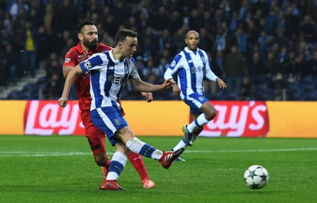
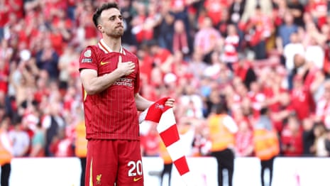
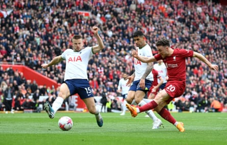

B ad moon, bad times and a river that will be overflowing for some time yet. It is impossible not to feel a deep sense of pain, sadness and shared heartbreak at news of the sudden death of Diogo Jota and his brother André Silva in a car crash in Spain. Jota was 28, father to three young children and a husband to his long-term partner, whom he married 10 days before his death.
Things that happen in sport are often described, with due dramatic licence, as tragedies. This is not a sports story. But it is the most terrible human tragedy. Those who have suffered similarly can empathise. But it is above all a private horror, an event that will alter the lives of family and friends for ever.
And yet it is of course a sport story too, and for good, warm, vital reasons, because Jota was blessed with the talent, heart and will that qualified him to live the extraordinary public life of a modern-day elite footballer. Within that nexus he was able to do so with the grace, humour and commitment that made him a beloved teammate and fan favourite, and also a fine public sporting figure, an athlete who poured energy, life and love into providing moments of uplift and connection in the shirts of Liverpool , Wolves, Porto, Portugal and his first club, Paços De Ferreira.
Diogo Jota scores for Porto in their Champions League match against Leicester in December 2016.Photograph: David Ramos/Getty Images
There is no sensible response when someone dies so young, with an entire second human life as father and husband still to be lived. But at a time when footballers are present constantly in our lives, when to exist in that form is to carry a distinct kind of responsibility – one players such as Jota gladly assume – his death will be a source of much public grief too.
Everybody liked Diogo Jota. Those who saw him progress from his Porto neighbourhood of Gondomar felt a huge sense of pride. Liverpool supporters cherished his presence, his intelligence and his hunger for the team. Three years ago he got the song his contributions deserved: He’s a lad from Portugal/ Better than Figo don’t you know , to the tune of Argentina’s 2014 World Cup final hymn, which is in turn derived and football-ised from Creedence Clearwater Revival’s Bad Moon Rising.
And even in the immediate shock there is a huge amount to remember and be glad of in the life of Diogo José Teixeira da Silva, the Portuguese word for the letter J added early on as a footballing nickname. He came through at Paços De Ferreira to the north-east of his home city. Atlético Madrid signed him and loaned him to Porto and then Wolves, which became permanent in 2018.
He settled instantly in Wolverhampton, hanging out at the Aromas De Portugal cafe in the city centre, welcoming his first child, playing a bit of training-ground cricket, always ready to meet local people, and even revealing at one point that he’d grown up with a soft spot for Everton in the David Moyes years, because they were “relentless”.
Nobody was ever going to hold that against Jota at Anfield. Have you met this guy? Too nice, too smart, too much of an all-round mensch. He signed in September 2020 and set off like a train, scoring seven goals in his first 10 games and adding speed, drive and expert finishing to that mid-Klopp team.
Diogo Jota (left) with his then Wolves teammates Rúben Neves outside the Aromas De Portugal cafe in September 2018.Photograph: Andrew Fox/The Guardian
Overall, and we must now say finally , Jota played 182 matches for Liverpool in a revolving folk-hero frontline that also featured Mohamed Salah, Sadio Mané, Roberto Firmino, Divock Origi, Luis Díaz, Cody Gakpo and Darwin Núñez. Even within that extended cast he was distinct, notable for his intelligence, movement and commitment to the team cause. He made 49 appearances for Portugal and played the last 15 minutes of the Nations League final victory four weeks ago, which would turn out to be his last game of football.
And now we have this, a full stop. Why does it seem quite so shocking, even from a distance, even beyond the fans who watched him in the flesh or on some fast-cut remote stream? Perhaps because Jota had that lightness about him, the kind of footballer who barely seems to leave a dent in the grass, who, for all the tactical match-smarts seems still to be playing the same endless teenage game, just in the way he moved and twirled into space.
Perhaps because he was a notably intelligent forward, one of those players where you feel you know them just by watching them, every run and pass part of some high-speed internal monologue.
Probably it has something to do with the way we observe sports people now generally, something to do with the way the game has become more remote, the connection coming in other ways, through the figures on the screen, the way they move and react, a strange kind of public-private intimacy.
Plus, of course, this is just such a violent interruption. It makes no sense. Youth is a finite quality. But young, smart, beautiful, nice people are supposed to live for ever. Whereas in reality it is perhaps a blessing this doesn’t happen more often. Professional athletes live hugely intense, fast-paced lives of constant travel and change. Rishabh Pant, who batted on Wednesday for India at Edgbaston, was lucky to escape with his life after a horrific car crash in Uttarakhand in December 2022, and is additionally cherished for every day he gets to keep on doing this.
Diogo Jota, Liverpool and Portugal footballer, dies aged 28 – video
Jota will now be cherished instead as a vivid and indelible memory. He always spoke really well, which was part of that feeling of intimacy. After scoring a late winner against Tottenham two years ago there was a notably lucid TV interview in which he gave an insight into his own connection to the moment after Liverpool had been pegged back late on.
“I remember Robbo [Andy Robertson] telling me to go on because we normally play that long ball – to go on and believe, and you could feel that was already a good sign. We did that, we won the second ball, we played back, we played again in behind and I could intercept a pass and score the winner. It was amazing.
“It doesn’t require too much thinking. I think the moment there that I believed I could intercept was key because I started running in behind and I saw their full-back could pass the ball back. That was the key moment for me and then it was just: ‘Make sure you control it right and you hit the target,’ and hopefully it’s in – and it was!”
Diogo Jota scores Liverpool’s winner in April 2023 after Tottenham had come back to level from 3-0 down.Photograph: Michael Regan/Getty Images
Jota also mentioned his song that day, which was sung relentlessly around Anfield at full-time, a coronational moment in a career that had begun in the hush of Covid.
“In my first season I scored a few winners as well, late, but there was no crowd and everybody was telling me: ‘You should see it if this was full,’ the feeling, and I could feel that tonight. It was something special that I will remember for ever.”
The reverse is of course now true. Anfield will remember Diogo Jota for ever. Nothing will ease the private grief. There is no script for moments like these. But for what it’s worth that song and the feeling behind it will provide its own fond, rolling Viking funeral in the years to come.